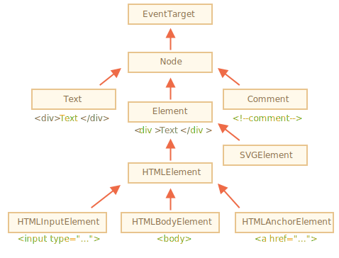

让我们更深入地了解一下 DOM 节点。
在本章中，我们将更深入地了解它们是什么，并学习它们最常用的属性。
不同的 DOM 节点可能有不同的属性。例如，标签 <a> 相对应的元素节点具有链接相关的（link-related）属性，标签 <input> 相对应的元素节点具有与输入相关的属性，等。文本节点与元素节点不同。但是所有这些标签对应的 DOM 节点之间也存在共有的属性和方法，因为所有类型的 DOM 节点都形成了一个单一层次的结构（single hierarchy）。
每个 DOM 节点都属于相应的内建类。
层次结构（hierarchy）的根节点是 EventTarget，Node 继承自它，其他 DOM 节点继承自 Node。
下图做了进一步说明：

类如下所示：
parentNode，nextSibling，childNodes 等（它们都是 getter）。Node 类的对象从未被创建。但是有一些继承自它的具体的节点类，例如：文本节点的 Text，元素节点的 Element，以及更多异域（exotic）类，例如注释节点的 Comment。nextElementSibling，children，以及像 getElementsByTagName 和 querySelector 这样的搜索方法。浏览器中不仅有 HTML，还会有 XML 和 SVG。Element 类充当更多特定类的基本类：SVGElement，XMLElement 和 HTMLElement。<input> 元素的类，<body> 元素的类，<a> 元素的类，因此，给定节点的全部属性和方法都是继承的结果。
例如，我们考虑一下 <input> 元素的 DOM 对象。它属于 HTMLInputElement 类。
它获取属性和方法，并将其作为下列类（按继承顺序列出）的叠加：
HTMLInputElement — 该类提供特定于输入的属性，HTMLElement — 它提供了通用（common）的 HTML 元素方法（以及 getter 和 setter）Element — 提供通用（generic）元素方法，Node — 提供通用 DOM 节点属性，EventTarget — 为事件（包括事件本身）提供支持，Object，因为像 hasOwnProperty 这样的“普通对象”方法也是可用的。我们可以通过回调来查看 DOM 节点类名，因为对象通常都具有 constructor 属性。它引用类的 constructor，constructor.name 就是它的名称：
alert( document.body.constructor.name ); // HTMLBodyElement……或者我们可以对其使用 toString 方法：
alert( document.body ); // [object HTMLBodyElement]我们还可以使用 instanceof 来检查继承：
alert( document.body instanceof HTMLBodyElement ); // true
alert( document.body instanceof HTMLElement ); // true
alert( document.body instanceof Element ); // true
alert( document.body instanceof Node ); // true
alert( document.body instanceof EventTarget ); // true正如我们所看到的，DOM 节点是常规的 JavaScript 对象。它们使用基于原型的类进行继承。
在浏览器中，使用 console.dir(elem) 输出元素来查看也是非常容易的。在控制台中，你可以看到 HTMLElement.prototype 和 Element.prototype 等。
```smart header="console.dir(elem) 与 console.log(elem)"
大多数浏览器在其开发者工具中都支持这两个命令：console.log 和 console.dir。它们将它们的参数输出到控制台中。对于 JavaScript 对象，这些命令通常做的是相同的事。
但对于 DOM 元素，它们是不同的：
console.log(elem) 显示元素的 DOM 树。console.dir(elem) 将元素显示为 DOM 对象，非常适合探索其属性。你可以在 document.body 上尝试一下。
````smart header="规范中的 IDL"
在规范中，DOM 类不是使用 JavaScript 来描述的，而是一种特殊的 [接口描述语言（Interface description language）](https://en.wikipedia.org/wiki/Interface_description_language)，简写为 IDL，它通常很容易理解。
在 IDL 中，所有属性以其类型开头。例如，`DOMString` 和 `boolean` 等。
以下是摘录（excerpt），并附有注释：
```js
// 定义 HTMLInputElement
*!*
// 冒号 ":" 表示 HTMLInputElement 继承自 HTMLElement
*/!*
interface HTMLInputElement: HTMLElement {
// 接下来是 <input> 元素的属性和方法
*!*
// "DOMString" 表示属性的值是字符串
*/!*
attribute DOMString accept;
attribute DOMString alt;
attribute DOMString autocomplete;
attribute DOMString value;
*!*
// 布尔值属性（true/false）
attribute boolean autofocus;
*/!*
...
*!*
// 现在方法："void" 表示方法没有返回值
*/!*
void select();
...
}
## "nodeType" 属性
`nodeType` 属性提供了另一种“过时的”用来获取 DOM 节点类型的方法。
它有一个数值型值（numeric value）：
- 对于元素节点 `elem.nodeType == 1`，
- 对于文本节点 `elem.nodeType == 3`，
- 对于 document 对象 `elem.nodeType == 9`，
- 在 [规范](https://dom.spec.whatwg.org/#node) 中还有一些其他值。
例如：
```html run
<body>
<script>
let elem = document.body;
// 让我们检查一下它是什么？
alert(elem.nodeType); // 1 => element
// 第一个子节点是
alert(elem.firstChild.nodeType); // 3 => text
// 对于 document 对象，类型是 9
alert( document.nodeType ); // 9
</script>
</body>
```
在现代脚本中，我们可以使用 `instanceof` 和其他基于类的检查方法来查看节点类型，但有时 `nodeType` 可能更简单。我们只能读取 `nodeType` 而不能修改它。
## 标签：nodeName 和 tagName
给定一个 DOM 节点，我们可以从 `nodeName` 或者 `tagName` 属性中读取它的标签名：
例如：
```js run
alert( document.body.nodeName ); // BODY
alert( document.body.tagName ); // BODY
```
tagName 和 nodeName 之间有什么不同吗？
当然，差异就体现在它们的名字上，但确实有些微妙。
- `tagName` 属性仅适用于 `Element` 节点。
- `nodeName` 是为任意 `Node` 定义的：
- 对于元素，它的意义与 `tagName` 相同。
- 对于其他节点类型（text，comment 等），它拥有一个对应节点类型的字符串。
换句话说，`tagName` 仅受元素节点支持（因为它起源于 `Element` 类），而 `nodeName` 则可以说明其他节点类型。
例如，我们比较一下 `document` 的 `tagName` 和 `nodeName`，以及一个注释节点：
```html run
<body><!-- comment -->
<script>
// for comment
alert( document.body.firstChild.tagName ); // undefined（不是一个元素）
alert( document.body.firstChild.nodeName ); // #comment
// for document
alert( document.tagName ); // undefined（不是一个元素）
alert( document.nodeName ); // #document
</script>
</body>
```
如果我们只处理元素，那么 `tagName` 和 `nodeName` 这两种方法，我们都可以使用，没有区别。
```smart header="标签名称始终是大写的，除非是在 XML 模式下"
浏览器有两种处理文档（document）的模式：HTML 和 XML。通常，HTML 模式用于网页。只有在浏览器接收到带有 header `Content-Type: application/xml+xhtml` 的 XML-document 时，XML 模式才会被启用。
在 HTML 模式下，`tagName/nodeName` 始终是大写的：它是 `BODY`，而不是 `<body>` 或 `<BoDy>`。
在 XML 模式中，大小写保持为“原样”。如今，XML 模式很少被使用。
```
## innerHTML：内容
[innerHTML](https://w3c.github.io/DOM-Parsing/#widl-Element-innerHTML) 属性允许将元素中的 HTML 获取为字符串形式。
我们也可以修改它。因此，它是更改页面最有效的方法之一。
下面这个示例显示了 `document.body` 中的内容，然后将其完全替换：
```html run
<body>
<p>A paragraph</p>
<div>A div</div>
<script>
alert( document.body.innerHTML ); // 读取当前内容
document.body.innerHTML = 'The new BODY!'; // 替换它
</script>
</body>
```
我们可以尝试插入无效的 HTML，浏览器会修复我们的错误：
```html run
<body>
<script>
document.body.innerHTML = '<b>test'; // 忘记闭合标签
alert( document.body.innerHTML ); // <b>test</b>（被修复了）
</script>
</body>
```
```smart header="脚本不会执行"
如果 `innerHTML` 将一个 `<script>` 标签插入到 document 中 — 它会成为 HTML 的一部分，但是不会执行。
```
### 小心："innerHTML+=" 会进行完全重写
我们可以使用 `elem.innerHTML+="more html"` 将 HTML 附加到元素上。
就像这样：
```js
chatDiv.innerHTML += "<div>Hello<img src='smile.gif'/> !</div>";
chatDiv.innerHTML += "How goes?";
```
但我们必须非常谨慎地使用它，因为我们所做的 **不是** 附加内容，而且完全地重写。
从技术上来说，下面这两行代码的作用相同：
```js
elem.innerHTML += "...";
// 进行写入的一种更简短的方式：
*!*
elem.innerHTML = elem.innerHTML + "..."
*/!*
```
换句话说，`innerHTML+=` 做了以下工作：
1. 移除旧的内容。
2. 然后写入新的 `innerHTML`（新旧结合）。
**因为内容已“归零”并从头开始重写，因此所有的图片和其他资源都将重写加载。**
在上面的 `chatDiv` 示例中，`chatDiv.innerHTML+="How goes?"` 重建了 HTML 内容并重新加载了 `smile.gif`（希望它是缓存的）。如果 `chatDiv` 有许多其他文本和图片，那么就很容易看到重新加载（译注：是指在有很多内容时，重新加载会耗费更多的时间，所以你就很容易看见页面重载的过程）。
并且还会有其他副作用。例如，如果现有的文本被用鼠标选中了，那么大多数浏览器都会在重写 `innerHTML` 时删除选定状态。如果这里有一个带有用户输入的文本的 `<input>`，那么这个被输入的文本将会被移除。诸如此类。
幸运的是，除了 `innerHTML`，还有其他可以添加 HTML 的方法，我们很快就会学到。
## outerHTML：元素的完整 HTML
`outerHTML` 属性包含了元素的完整 HTML。就像 `innerHTML` 加上元素本身一样。
下面是一个示例：
```html run
<div id="elem">Hello <b>World</b></div>
<script>
alert(elem.outerHTML); // <div id="elem">Hello <b>World</b></div>
</script>
```
**注意：与 `innerHTML` 不同，写入 `outerHTML` 不会改变元素。而是在 DOM 中替换它。**
是的，听起来很奇怪，它确实很奇怪，这就是为什么我们在这里对此做了一个单独的注释。看一下。
考虑下面这个示例：
```html run
<div>Hello, world!</div>
<script>
let div = document.querySelector('div');
*!*
// 使用 <p>...</p> 替换 div.outerHTML
*/!*
div.outerHTML = '<p>A new element</p>'; // (*)
*!*
// 蛤！'div' 还是原来那样！
*/!*
alert(div.outerHTML); // <div>Hello, world!</div> (**)
</script>
```
看起来真的很奇怪，对吧？
在 `(*)` 行，我们使用 `<p>A new element</p>` 替换 `div`。在外部文档（DOM）中我们可以看到的是新内容而不是 `<div>`。但是正如我们在 `(**)` 行所看到的，旧的 `div` 变量并没有被改变。
`outerHTML` 赋值不会修改 DOM 元素（在这个例子中是被 'div' 引用的对象），而是将其从 DOM 中删除并在其位置插入新的 HTML。
所以，在 `div.outerHTML=...` 中发生的事情是：
- `div` 被从文档（document）中移除。
- 另一个 HTML 片段 `<p>A new element</p>` 被插入到其位置上。
- `div` 仍拥有其旧的值。新的 HTML 没有被赋值给任何变量。
在这儿很容易出错：修改 `div.outerHTML` 然后继续使用 `div`，就好像它包含的是新内容一样。但事实并非如此。这样的东西对于 `innerHTML` 是正确的，但是对于 `outerHTML` 却不正确。
我们可以向 `elem.outerHTML` 写入内容，但是要记住，它不会改变我们所写的元素（'elem'）。而是将新的 HTML 放在其位置上。我们可以通过查询 DOM 来获取对新元素的引用。
## nodeValue/data：文本节点内容
`innerHTML` 属性仅对元素节点有效。
其他节点类型，例如文本节点，具有它们的对应项：`nodeValue` 和 `data` 属性。这两者在实际使用中几乎相同，只有细微规范上的差异。因此，我们将使用 `data`，因为它更短。
读取文本节点和注释节点的内容的示例：
```html run height="50"
<body>
Hello
<!-- Comment -->
<script>
let text = document.body.firstChild;
*!*
alert(text.data); // Hello
*/!*
let comment = text.nextSibling;
*!*
alert(comment.data); // Comment
*/!*
</script>
</body>
```
对于文本节点，我们可以想象读取或修改它们的原因，但是注释呢？
有时，开发者会将信息或模板说明嵌入到 HTML 中的注释中，如下所示：
```html
<!-- if isAdmin -->
<div>Welcome, Admin!</div>
<!-- /if -->
```
……然后，JavaScript 可以从 `data` 属性中读取它，并处理嵌入的指令。
## textContent：纯文本
`textContent` 提供了对元素内的 **文本** 的访问权限：仅文本，去掉所有 `<tags>`。
例如：
```html run
<div id="news">
<h1>Headline!</h1>
<p>Martians attack people!</p>
</div>
<script>
// Headline! Martians attack people!
alert(news.textContent);
</script>
```
正如我们所看到，只返回文本，就像所有 `<tags>` 都被剪掉了一样，但实际上其中的文本仍然存在。
在实际开发中，用到这样的文本读取的场景非常少。
**写入 `textContent` 要有用得多，因为它允许以“安全方式”写入文本。**
假设我们有一个用户输入的任意字符串，我们希望将其显示出来。
- 使用 `innerHTML`，我们将其“作为 HTML”插入，带有所有 HTML 标签。
- 使用 `textContent`，我们将其“作为文本”插入，所有符号（symbol）均按字面意义处理。
比较两者：
```html run
<div id="elem1"></div>
<div id="elem2"></div>
<script>
let name = prompt("What's your name?", "<b>Winnie-the-pooh!</b>");
elem1.innerHTML = name;
elem2.textContent = name;
</script>
```
1. 第一个 `<div>` 获取 name “作为 HTML”：所有标签都变成标签，所以我们可以看到粗体的 name。
2. 第二个 `<div>` 获取 name “作为文本”，因此我们可以从字面上看到 `<b>Winnie-the-pooh!</b>`。
在大多数情况下，我们期望来自用户的文本，并希望将其视为文本对待。我们不希望在我们的网站中出现意料不到的 HTML。对 `textContent` 的赋值正好可以做到这一点。
## "hidden" 属性
"hidden" 特性（attribute）和 DOM 属性（property）指定元素是否可见。
我们可以在 HTML 中使用它，或者使用 JavaScript 进行赋值，如下所示：
```html run height="80"
<div>Both divs below are hidden</div>
<div hidden>With the attribute "hidden"</div>
<div id="elem">JavaScript assigned the property "hidden"</div>
<script>
elem.hidden = true;
</script>
```
从技术上来说，`hidden` 与 `style="display:none"` 做的是相同的事。但 `hidden` 写法更简洁。
这里有一个 blinking 元素：
```html run height=50
<div id="elem">A blinking element</div>
<script>
setInterval(() => elem.hidden = !elem.hidden, 1000);
</script>
```
## 更多属性
DOM 元素还有其他属性，特别是那些依赖于 class 的属性：
- `value` — `<input>`，`<select>` 和 `<textarea>`（`HTMLInputElement`，`HTMLSelectElement`……）的 value。
- `href` — `<a href="...">`（`HTMLAnchorElement`）的 href。
- `id` — 所有元素（`HTMLElement`）的 "id" 特性（attribute）的值。
- ……以及更多其他内容……
例如：
```html run height="80"
<input type="text" id="elem" value="value">
<script>
alert(elem.type); // "text"
alert(elem.id); // "elem"
alert(elem.value); // value
</script>
```
大多数标准 HTML 特性（attribute）都具有相应的 DOM 属性，我们可以像这样访问它。
如果我们想知道给定类的受支持属性的完整列表，我们可以在规范中找到它们。例如，在 <https://html.spec.whatwg.org/#htmlinputelement> 中记录了 `HTMLInputElement`。
或者，如果我们想要快速获取它们，或者对具体的浏览器规范感兴趣 — 我们总是可以使用 `console.dir(elem)` 输出元素并读取其属性。或者在浏览器的开发者工具的元素（Elements）标签页中探索“DOM 属性”。
## 总结
每个 DOM 节点都属于一个特定的类。这些类形成层次结构（hierarchy）。完整的属性和方法集是继承的结果。
主要的 DOM 节点属性有：
`nodeType`
: 我们可以使用它来查看节点是文本节点还是元素节点。它具有一个数值型值（numeric value）：`1` 表示元素，`3` 表示文本节点，其他一些则代表其他节点类型。只读。
`nodeName/tagName`
: 用于元素名，标签名（除了 XML 模式，都要大写）。对于非元素节点，`nodeName` 描述了它是什么。只读。
`innerHTML`
: 元素的 HTML 内容。可以被修改。
`outerHTML`
: 元素的完整 HTML。对 `elem.outerHTML` 的写入操作不会触及 `elem` 本身。而是在外部上下文中将其替换为新的 HTML。
`nodeValue/data`
: 非元素节点（文本、注释）的内容。两者几乎一样，我们通常使用 `data`。可以被修改。
`textContent`
: 元素内的文本：HTML 减去所有 `<tags>`。写入文本会将文本放入元素内，所有特殊字符和标签均被视为文本。可以安全地插入用户生成的文本，并防止不必要的 HTML 插入。
`hidden`
: 当被设置为 `true` 时，执行与 CSS `display:none` 相同的事。
DOM 节点还具有其他属性，具体有哪些属性则取决于它们的类。例如，`<input>` 元素（`HTMLInputElement`）支持 `value`，`type`，而 `<a>` 元素（`HTMLAnchorElement`）则支持 `href` 等。大多数标准 HTML 特性（attribute）都具有相应的 DOM 属性。
然而，但是 HTML 特性（attribute）和 DOM 属性（property）并不总是相同的，我们将在下一章中看到。